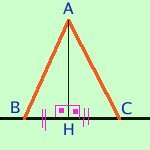
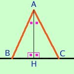
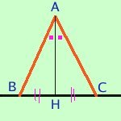

Se in un triangolo l'altezza, la mediana e la bisettrice condotte dal vertice opposto alla base sono coincidenti allora il triangolo e' isoscele
posso anche prendere per ipotesi che coincidono altezza e mediana
oppure prendere per ipotesi che coincidono altezza e bisettrice
od anche prendere per ipotesi che coincidono mediana e bisettrice
in tutti e tre i casi il triangolo sara' isoscele;
Quindi ho tre possibili dimostrazioni
- Prendiamo per ipotesi che coincidano altezza e mediana

Ipotesi
AHB=AHC=angolo retto BH=HC |
Tesi
AB=BC |
Dimostrazione: considero i triangoli
ABH ed AHC essi hanno
gli angoli ABH=AHC perche' retti
BH=HC per ipotesi
AH in comune
Quindi i due triangoli sono congruenti per il primo criterio ed in particolare avremo i lati AB ed AC congruenti fra loro
- Prendiamo per ipotesi che coincidano altezza e bisettrice

Ipotesi
AHB=AHC=angolo retto, angoli BAH=HAC |
Tesi
AB=BC |
Dimostrazione: considero i triangoli
ABH ed AHC essi hanno
gli angoli ABH=AHC perche' retti
BAH=HAC per ipotesi
AH in comune
Quindi i due triangoli sono congruenti per il secondo criterio ed in particolare avremo i lati AB ed AC congruenti fra loro
- Prendiamo per ipotesi che coincidano mediana e bisettrice

Ipotesi
BH=HC angoli BAH=HAC |
Tesi
AB=BC |
Dimostrazione: opero un ribaltamento del lato AB attorno alla retta AH: siccome gli angoli BHA ed AHC sono congruenti e sono congruenti anche i segmenti BH e HC il segmento AB coincidera' esattamente con il segmento AC ed il punto B si trasferira' sul punto C come volevamo
|